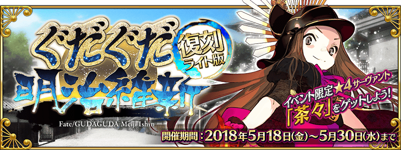
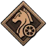

本頁面資訊僅供參考，實際情況請以遊戲內資料為準。
由於直接使用官方翻譯，可能會與其他站內翻譯相異，敬請見諒。
其他公告內容請參照日版當時公告翻譯。


採用GoogleDrive資料夾呈現
- 主線關卡
-
序 GUDAGUDA文明開化 消耗AP 推薦Lv. 初次報酬 開放條件 0 1 無 5/18 17:00~5/30 11:59
通過：Grand Order第一節 黑胡子來航 消耗AP 推薦Lv. 初次報酬 開放條件 5 10 5/18 17:00~5/30 11:59
通過：序 GUDAGUDA文明開化〉 職階傾向 QP Exp 絆 

1,400 275 115 Wave 1 1 Lv.11 迷你信 HP5,088 2 Lv.13 迷你信戰車 HP8,500 3 Lv.11 迷你信 HP5,088 第二節 信啊門外之變 消耗AP 推薦Lv. 初次報酬 開放條件 0 1 無 5/18 17:00~5/30 11:59
通過：第一節 黑胡子來航信啊門外之變【決勝戰】 消耗AP 推薦Lv. 初次報酬 開放條件 10 15 5/18 17:00~5/30 11:59
通過：第二節 信啊門外之變〉 職階傾向 QP Exp 絆 1,900 550 165 Wave 1 1 2 Lv.12 沖田小姐大勝利！ HP59,044 信啊門外之變【決勝戰】 消耗AP 推薦Lv. 初次報酬 開放條件 10 15 5/18 17:00~5/30 11:59
通過：第二節 信啊門外之變〉 職階傾向 QP Exp 絆 1,900 550 165 Wave 1 1 2  Lv.23 信之野望 幕末版 HP59,527
Lv.23 信之野望 幕末版 HP59,527後節 上吧上吧我們的織田幕府！ 消耗AP 推薦Lv. 初次報酬 開放條件 0 1 無 5/19 17:00~5/30 11:59
通過：信啊門外之變【決勝戰】後節 GoGo大家的新選組！ 消耗AP 推薦Lv. 初次報酬 開放條件 0 1 無 5/19 17:00~5/30 11:59
通過：信啊門外之變【決勝戰】第三節 池田屋GUDAGUDA淪陷 消耗AP 推薦Lv. 初次報酬 開放條件 5 20 5/19 17:00~5/30 11:59 〉〉 職階傾向 QP Exp 絆 2,400 955 215 Wave 1 1 Lv.10 銀之機械信 HP5,807 2 Lv.11 銀之機械信 HP6,297 3 Lv.12 銀之機械信 HP6,745 4 Lv.13 金之機械信 HP7,190 5 Lv.14 金之機械信 HP7,635 6 Lv.16 巨大機械信 HP13,728 7 Lv.17 神機械信 HP14,530 〉〉 職階傾向 QP Exp 絆 


2,400 955 215 Wave 1 1 Lv.10 銀之機械信 HP8,094 2 Lv.11 金之機械信 HP10,066 3 Lv.10 銀之機械信 HP8,094 Wave 2 1  Lv.24 西鄉愛迪盛 HP53,240
Lv.24 西鄉愛迪盛 HP53,2402 Lv.14 信UFO HP17,602 3 Lv.20 桂·特斯拉 HP51,156 第四節 宇宙鳥羽伏見之戰 消耗AP 推薦Lv. 初次報酬 開放條件 0 1 無 5/19 17:00~5/30 11:59
通過：第三節 池田屋GUDAGUDA淪陷宇宙鳥羽伏見之戰【決勝戰】 消耗AP 推薦Lv. 初次報酬 開放條件 10 15 5/19 17:00~5/30 11:59
通過：第四節 宇宙鳥羽伏見之戰〉 職階傾向 QP Exp 絆 1,900 550 165 Wave 1 1 2 Lv.25 西鄉愛迪盛 HP59,884宇宙鳥羽伏見之戰【決勝戰】 消耗AP 推薦Lv. 初次報酬 開放條件 10 15 5/19 17:00~5/30 11:59
通過：第四節 宇宙鳥羽伏見之戰〉 職階傾向 QP Exp 絆 1,900 550 165 Wave 1 1 2 Lv.12 桂·特斯拉 HP55,328 後節 贏了！ 織田幕府完！ 消耗AP 推薦Lv. 初次報酬 開放條件 0 1 無 5/20 17:00~5/30 11:59
通過：宇宙鳥羽伏見之戰【決勝戰】後節 勝利的關鍵是新選組！ 消耗AP 推薦Lv. 初次報酬 開放條件 0 1 無 5/20 17:00~5/30 11:59
通過：宇宙鳥羽伏見之戰【決勝戰】第五節 必殺的衛宮丸 消耗AP 推薦Lv. 初次報酬 開放條件 5 30 5/20 17:00~5/30 11:59 〉 職階傾向 QP Exp 絆 
3,400 2,190 315 Wave 1 1 Lv.16 銀之機械信 HP6,307 2  Lv.25 謎之長宗我部女主角X HP18,600
Lv.25 謎之長宗我部女主角X HP18,6003  Lv.25 明石小艾 HP23,998
Lv.25 明石小艾 HP23,998Wave 2 1  Lv.39 後藤瑟坦特 HP28,750
Lv.39 後藤瑟坦特 HP28,7502 Lv.20 金之機械信 HP10,080 3 Lv.38 毛利美狄永 HP16,780Wave 3 1 Lv.24 神機械信 HP10,482 2 Lv.40 真田衛村 HP70,900 / 60,6603 Lv.24 神機械信 HP10,482 特殊效果 場地效果《衛宮丸的炮擊(衛宮丸からの砲撃)》：每回合我方全體HP減少300
BREAK時《高砂之舞(高砂の舞)》：500%機率敵全體星星發生率提升100%(3回合) ＋ 自身Critical發生率提升50%(3回合)第六節 決戰，GUDAGUDA日輪城！ 消耗AP 推薦Lv. 初次報酬 開放條件 0 1 無 5/20 17:00~5/30 11:59
通過：第五節 必殺的衛宮丸決戰，GUDAGUDA日輪城！【決勝戰】 消耗AP 推薦Lv. 初次報酬 開放條件 10 15 5/20 17:00~5/30 11:59
通過：第六節 決戰，GUDAGUDA日輪城！〉 職階傾向 QP Exp 絆 1,900 550 165 Wave 1 1  Lv.30 愛德華·佩里奇 HP30,632 2 Lv.20 布拉瓦茨基所長 HP30,072第七節 永別了心愛的GUDAGUDA世界 消耗AP 推薦Lv. 初次報酬 開放條件 5 40 5/20 17:00~5/30 11:59
通過：決戰，GUDAGUDA日輪城！【決勝戰】〉 職階傾向 QP Exp 絆 4,400 5,690 415 Wave 1 1 Lv.25 金色魔太閣 HP145,792 / 98,950 特殊效果 第1回合《黃昏之時已至(黄昏の時来たれり)》：自身防禦力提升20%(3回合)
《瞑目》：自身防禦力提升20%(1回合)
BREAK時《獵刀(刀狩り)》：自身弱體解除 ＋ 敵全體弱體解除＆強化解除 ＋ 自身強化解除
寶具《燒卻式 安德拉斯特(焼却式 アンドラス)》：敵全體400%攻擊＆攻擊力下降20%(3回合)終 不滅之誠 消耗AP 推薦Lv. 初次報酬 開放條件 5 50 5/20 17:00~5/30 11:59
通過：第七節 永別了心愛的GUDAGUDA世界〉 職階傾向 QP Exp 絆 5,400 10,190 515 Wave 1 1 2 Lv.53 土方歲三 HP240,520 / 200,100特殊效果 BREAK時《不屈的架勢(不屈の構え)》：自身NP格增加1 ＋ 500%機率敵全體獲得10個星星 - 勢力戰 第1戰
-
信啊門外之變【勢力戰】 足輕級 消耗AP 推薦Lv. 初次報酬 開放條件 10 15 無 5/18 17:00~5/19 23:59
通過：第二節 信啊門外之變∞ 職階傾向 QP Exp 絆 1,900 550 165 Wave 1 1 Lv.7 信選組 HP4,850
Lv.10 迷你信 HP4,6922 Lv.8 信選組 HP4,950
Lv.11 迷你信 HP4,710Wave 2 1 Lv.10 信選組 HP7,900
Lv.13 迷你信 HP7,7082 Lv.9 信選組 HP7,750
Lv.12 迷你信 HP7,567Wave 3 1 2 Lv.14 沖田小姐大勝利！ HP35,464 信啊門外之變【勢力戰】 組頭級 消耗AP 推薦Lv. 初次報酬 開放條件 20 25 無 5/18 17:00~5/19 23:59
通過：第二節 信啊門外之變∞ 職階傾向 QP Exp 絆 2,900 1,385 265 Wave 1 1 Lv.11 信選組 HP9,260
Lv.14 迷你信 HP8,5202 Lv.10 信選組 HP8,630
Lv.13 迷你信 HP7,350Wave 2 1 Lv.14 信選組 HP12,630
Lv.18 迷你信 HP11,9102 Lv.13 信選組 HP9,840
Lv.17 迷你信 HP9,2003 Lv.14 信選組 HP12,630
Lv.18 迷你信 HP11,910Wave 3 1 2 Lv.17 沖田小姐大勝利！ HP74,280 信啊門外之變【勢力戰】 番頭級 消耗AP 推薦Lv. 初次報酬 開放條件 30 40 無 5/18 17:00~5/19 23:59
通過：第二節 信啊門外之變∞ 職階傾向 QP Exp 絆 4,400 5,690 415 Wave 1 1 Lv.22 信選組 HP11,510
Lv.26 迷你信 HP10,6002 Lv.23 信選組 HP13,870
Lv.28 迷你信 HP12,0703 Lv.22 信選組 HP11,510
Lv.26 迷你信 HP10,600Wave 2 1 Lv.25 信選組 HP16,100
Lv.30 迷你信 HP15,8002 Lv.24 信選組 HP14,760
Lv.29 迷你信 HP13,602Wave 3 1 Lv.25 信選組 HP30,400
Lv.30 迷你信 HP28,0002 Lv.30 沖田小姐大勝利！ HP108,128 信啊門外之變【勢力戰】 旗本級 消耗AP 推薦Lv. 初次報酬 開放條件 40 60 無 5/18 17:00~5/19 23:59
通過：第二節 信啊門外之變∞ 職階傾向 QP Exp 絆 
6,400 15,690 615 Wave 1 1 Lv.33 信選組 HP15,550
Lv.40 迷你信 HP14,300
Lv.36 巨大信 HP14,9002 Lv.33 信選組 HP15,550
Lv.40 迷你信 HP14,300
Lv.36 巨大信 HP14,9003 Lv.34 信選組 HP16,820
Lv.42 迷你信 HP15,810
Lv.37 巨大信 HP16,370Wave 2 1  Lv.35 焦油吞噬者 HP79,701
Lv.35 焦油吞噬者 HP79,7012 3 Lv.35 信選組 HP18,720
Lv.43 迷你信 HP17,930
Lv.38 巨大信 HP18,330Wave 3 1 Lv.35 信選組 HP45,560
Lv.43 迷你信 HP40,200
Lv.38 巨大信 HP41,9002 Lv.72 沖田小姐大勝利！ HP177,714 3 Lv.35 信選組 HP45,560
Lv.43 迷你信 HP40,200
Lv.38 巨大信 HP41,900信啊門外之變【勢力戰】 大將級 消耗AP 推薦Lv. 初次報酬 開放條件 40 80 無 5/18 17:00~5/19 23:59
通過：第二節 信啊門外之變∞ 職階傾向 QP Exp 絆 8,400 29,690 815 Wave 1 1 Lv.41 信選組 HP20,200
Lv.50 迷你信 HP18,600
Lv.45 巨大信 HP19,2102 Lv.42 信選組 HP21,300
Lv.52 迷你信 HP19,300
Lv.46 巨大信 HP20,1003 Lv.41 信選組 HP20,200
Lv.50 迷你信 HP18,600
Lv.45 巨大信 HP19,210Wave 2 1 Lv.50 焦油吞噬者 HP120,8972 3 Lv.44 信選組 HP24,300
Lv.52 迷你信 HP22,360
Lv.48 巨大信 HP23,870Wave 3 1 Lv.44 信選組 HP70,100
Lv.52 迷你信 HP68,100
Lv.48 巨大信 HP69,3002 Lv.78 沖田小姐大勝利！ HP272,500 3 Lv.44 信選組 HP70,100
Lv.52 迷你信 HP68,100
Lv.48 巨大信 HP69,300信啊門外之變【勢力戰】 書生級 消耗AP 推薦Lv. 初次報酬 開放條件 10 15 無 5/18 17:00~5/19 23:59
通過：第二節 信啊門外之變∞ 職階傾向 QP Exp 絆 1,900 550 165 Wave 1 1 Lv.8 迷你信戰車 HP5,650
Lv.10 迷你信 HP4,6542 3 Lv.9 迷你信戰車 HP5,930
Lv.11 迷你信 HP4,720Wave 2 1 Lv.11 迷你信戰車 HP8,000
Lv.13 迷你信 HP7,7002 Lv.10 迷你信戰車 HP7,890
Lv.12 迷你信 HP7,537Wave 3 1 2 Lv.25 信之野望 幕末版 HP35,987信啊門外之變【勢力戰】 門生級 消耗AP 推薦Lv. 初次報酬 開放條件 20 25 無 5/18 17:00~5/19 23:59
通過：第二節 信啊門外之變∞ 職階傾向 QP Exp 絆 2,900 1,385 265 Wave 1 1 Lv.12 迷你信戰車 HP9,310
Lv.14 迷你信 HP8,5202 Lv.11 迷你信戰車 HP7,840
Lv.13 迷你信 HP7,350Wave 2 1 Lv.15 迷你信戰車 HP13,080
Lv.18 迷你信 HP11,9202 Lv.14 迷你信戰車 HP9,630
Lv.17 迷你信 HP9,2803 Lv.15 迷你信戰車 HP13,080
Lv.18 迷你信 HP11,920Wave 3 1 2 Lv.30 信之野望 幕末版 HP74,500信啊門外之變【勢力戰】 勇士級 消耗AP 推薦Lv. 初次報酬 開放條件 30 40 無 5/18 17:00~5/19 23:59
通過：第二節 信啊門外之變∞ 職階傾向 QP Exp 絆 4,400 5,690 415 Wave 1 1 Lv.22 迷你信戰車 HP11,630
Lv.26 迷你信 HP10,6022 Lv.23 迷你信戰車 HP13,910
Lv.28 迷你信 HP12,0703 Lv.22 迷你信戰車 HP11,630
Lv.26 迷你信 HP10,602Wave 2 1 Lv.26 迷你信戰車 HP15,866
Lv.31 迷你信 HP15,8662 3 Lv.25 迷你信戰車 HP13,650
Lv.30 迷你信 HP13,650Wave 3 1 Lv.26 迷你信戰車 HP28,010
Lv.31 迷你信 HP28,0102 3 Lv.52 信之野望 幕末版 HP104,900信啊門外之變【勢力戰】 浪士級 消耗AP 推薦Lv. 初次報酬 開放條件 40 60 無 5/18 17:00~5/19 23:59
通過：第二節 信啊門外之變∞ 職階傾向 QP Exp 絆 6,400 15,690 615 Wave 1 1 Lv.35 迷你信戰車 HP15,300
Lv.40 迷你信 HP14,800
Lv.36 巨大信 HP14,9602 Lv.35 迷你信戰車 HP15,300
Lv.40 迷你信 HP14,800
Lv.36 巨大信 HP14,9603 Lv.36 迷你信戰車 HP16,200
Lv.42 迷你信 HP15,500
Lv.37 巨大信 HP15,900Wave 2 1 Lv.39 迷你信戰車 HP18,800
Lv.45 迷你信 HP17,900
Lv.40 巨大信 HP18,3002  Lv.35 哈提公 HP79,500
Lv.35 哈提公 HP79,500Wave 3 1 Lv.39 迷你信戰車 HP46,500
Lv.45 迷你信 HP45,520
Lv.40 巨大信 HP45,9302 Lv.39 迷你信戰車 HP46,500
Lv.45 迷你信 HP45,520
Lv.40 巨大信 HP45,9303 Lv.74 信之野望 幕末版 HP138,500信啊門外之變【勢力戰】 隊士級 消耗AP 推薦Lv. 初次報酬 開放條件 40 80 無 5/18 17:00~5/19 23:59
通過：第二節 信啊門外之變∞ 職階傾向 QP Exp 絆 8,400 29,690 815 Wave 1 1 Lv.44 迷你信戰車 HP19,200
Lv.50 迷你信 HP18,400
Lv.46 巨大信 HP18,8002 Lv.45 迷你信戰車 HP22,200
Lv.52 迷你信 HP21,050
Lv.47 巨大信 HP21,5603 Lv.44 迷你信戰車 HP19,200
Lv.50 迷你信 HP18,400
Lv.46 巨大信 HP18,800Wave 2 1 Lv.46 迷你信戰車 HP24,010
Lv.54 迷你信 HP22,560
Lv.48 巨大信 HP23,5002 Lv.42 哈提公 HP120,200Wave 3 1 Lv.46 迷你信戰車 HP72,000
Lv.54 迷你信 HP70,050
Lv.48 巨大信 HP71,4002 Lv.85 信之野望 幕末版 HP272,3003 Lv.46 迷你信戰車 HP72,000
Lv.54 迷你信 HP70,050
Lv.48 巨大信 HP71,400 - 勢力戰 第2戰
-
宇宙鳥羽伏見之戰【勢力戰】 足輕級 消耗AP 推薦Lv. 初次報酬 開放條件 10 15 無 5/19 17:00~5/20 23:59
通過：第四節 宇宙鳥羽伏見之戰∞ 職階傾向 QP Exp 絆 1,900 550 165 Wave 1 1 Lv.7 銀之機械信 HP4,940
Lv.10 銀之迷你信 HP4,6802 3 Lv.8 銀之機械信 HP5,050
Lv.11 銀之迷你信 HP4,790Wave 2 1 2 Lv.10 銀之機械信 HP8,610
Lv.13 銀之迷你信 HP7,8503 Lv.9 銀之機械信 HP8,263
Lv.12 銀之迷你信 HP7,499Wave 3 1 2 Lv.27 西鄉愛迪盛 HP36,888宇宙鳥羽伏見之戰【勢力戰】 組頭級 消耗AP 推薦Lv. 初次報酬 開放條件 20 25 無 5/19 17:00~5/20 23:59
通過：第四節 宇宙鳥羽伏見之戰∞ 職階傾向 QP Exp 絆 2,900 1,385 265 Wave 1 1 Lv.11 銀之機械信 HP9,080
Lv.14 銀之迷你信 HP8,5202 Lv.10 銀之機械信 HP7,910
Lv.13 銀之迷你信 HP7,1503 Lv.10 銀之機械信 HP7,910
Lv.13 銀之迷你信 HP7,150Wave 2 1 Lv.13 銀之機械信 HP13,600
Lv.17 銀之迷你信 HP12,6002 3 Lv.14 銀之機械信 HP14,750
Lv.18 銀之迷你信 HP13,100Wave 3 1 2 Lv.38 西鄉愛迪盛 HP78,500宇宙鳥羽伏見之戰【勢力戰】 番頭級 消耗AP 推薦Lv. 初次報酬 開放條件 30 40 無 5/19 17:00~5/20 23:59
通過：第四節 宇宙鳥羽伏見之戰∞ 職階傾向 QP Exp 絆 4,400 5,690 415 Wave 1 1 Lv.22 銀之機械信 HP12,470
Lv.30 銀之迷你信 HP11,1022 Lv.24 銀之機械信 HP15,220
Lv.31 銀之迷你信 HP14,2303 Lv.22 銀之機械信 HP12,470
Lv.30 銀之迷你信 HP11,102Wave 2 1 Lv.26 銀之機械信 HP19,400
Lv.33 銀之迷你信 HP17,8022 3 Lv.25 銀之機械信 HP16,300
Lv.32 銀之迷你信 HP15,010Wave 3 1 Lv.26 銀之機械信 HP31,200
Lv.33 銀之迷你信 HP30,0002 3 Lv.68 西鄉愛迪盛 HP101,000宇宙鳥羽伏見之戰【勢力戰】 旗本級 消耗AP 推薦Lv. 初次報酬 開放條件 40 60 無 5/19 17:00~5/20 23:59
通過：第四節 宇宙鳥羽伏見之戰∞ 職階傾向 QP Exp 絆 6,400 15,690 615 Wave 1 1 Lv.35 金之機械信 HP17,400
Lv.32 巨大機械信 HP17,980
Lv.45 銀之迷你信 HP16,230
Lv.40 銀之巨大信 HP16,9902 Lv.36 金之機械信 HP18,230
Lv.33 巨大機械信 HP18,800
Lv.46 銀之迷你信 HP17,900
Lv.41 銀之巨大信 HP17,9993 Lv.35 金之機械信 HP17,400
Lv.32 巨大機械信 HP17,980
Lv.45 銀之迷你信 HP16,230
Lv.40 銀之巨大信 HP16,990Wave 2 1 Lv.38 金之機械信 HP20,400
Lv.35 巨大機械信 HP20,965
Lv.47 銀之迷你信 HP19,900
Lv.43 銀之巨大信 HP20,1102 3 Lv.40 鍋爐火 HP75,200Wave 3 1 Lv.38 金之機械信 HP44,720
Lv.35 巨大機械信 HP45,100
Lv.47 銀之迷你信 HP43,900
Lv.43 銀之巨大信 HP44,2602 Lv.75 西鄉愛迪盛 HP126,8003 Lv.38 金之機械信 HP44,720
Lv.35 巨大機械信 HP45,100
Lv.47 銀之迷你信 HP43,900
Lv.43 銀之巨大信 HP44,260宇宙鳥羽伏見之戰【勢力戰】 大將級 消耗AP 推薦Lv. 初次報酬 開放條件 40 80 無 5/19 17:00~5/20 23:59
通過：第四節 宇宙鳥羽伏見之戰∞ 職階傾向 QP Exp 絆 8,400 29,690 815 Wave 1 1 Lv.44 銀之機械信 HP21,960
Lv.40 神機械信 HP22,400
Lv.55 銀之迷你信 HP20,990
Lv.50 銀之巨大信 HP21,4502 Lv.45 銀之機械信 HP26,320
Lv.41 神機械信 HP27,070
Lv.56 銀之迷你信 HP25,050
Lv.51 銀之巨大信 HP25,9503 Lv.44 銀之機械信 HP21,960
Lv.40 神機械信 HP22,400
Lv.55 銀之迷你信 HP20,990
Lv.50 銀之巨大信 HP21,450Wave 2 1 Lv.46 銀之機械信 HP29,880
Lv.42 神機械信 HP30,320
Lv.57 銀之迷你信 HP29,270
Lv.52 銀之巨大信 HP29,5902 Lv.48 鍋爐火 HP117,800Wave 3 1 Lv.46 銀之機械信 HP74,700
Lv.42 神機械信 HP75,300
Lv.57 銀之迷你信 HP73,700
Lv.52 銀之巨大信 HP74,1202 Lv.46 銀之機械信 HP74,700
Lv.42 神機械信 HP75,300
Lv.57 銀之迷你信 HP73,700
Lv.52 銀之巨大信 HP74,1203 Lv.85 西鄉愛迪盛 HP252,100宇宙鳥羽伏見之戰【勢力戰】 書生級 消耗AP 推薦Lv. 初次報酬 開放條件 10 15 無 5/19 17:00~5/20 23:59
通過：第四節 宇宙鳥羽伏見之戰∞ 職階傾向 QP Exp 絆 1,900 550 165 Wave 1 1 Lv.6 信UFO HP4,860
Lv.10 銀之迷你信 HP4,4202 Lv.7 信UFO HP4,910
Lv.11 銀之迷你信 HP4,600Wave 2 1 Lv.9 信UFO HP7,744
Lv.13 銀之迷你信 HP7,4022 Lv.8 信UFO HP7,530
Lv.12 銀之迷你信 HP7,120Wave 3 1 2 Lv.13 桂·特斯拉 HP35,464 宇宙鳥羽伏見之戰【勢力戰】 門生級 消耗AP 推薦Lv. 初次報酬 開放條件 20 25 無 5/19 17:00~5/20 23:59
通過：第四節 宇宙鳥羽伏見之戰∞ 職階傾向 QP Exp 絆 2,900 1,385 265 Wave 1 1 Lv.8 信UFO HP7,460
Lv.13 銀之迷你信 HP7,0202 Lv.8 信UFO HP7,460
Lv.13 銀之迷你信 HP7,0203 Lv.9 信UFO HP9,160
Lv.14 銀之迷你信 HP8,880Wave 2 1 Lv.11 信UFO HP15,300
Lv.17 銀之迷你信 HP14,4002 Lv.10 信UFO HP13,100
Lv.16 銀之迷你信 HP12,400Wave 3 1 2 Lv.18 桂·特斯拉 HP79,260 宇宙鳥羽伏見之戰【勢力戰】 勇士級 消耗AP 推薦Lv. 初次報酬 開放條件 30 40 無 5/19 17:00~5/20 23:59
通過：第四節 宇宙鳥羽伏見之戰∞ 職階傾向 QP Exp 絆 4,400 5,690 415 Wave 1 1 Lv.19 信UFO HP10,580
Lv.26 銀之迷你信 HP9,8502 Lv.20 信UFO HP13,160
Lv.28 銀之迷你信 HP12,8903 Lv.19 信UFO HP10,580
Lv.26 銀之迷你信 HP9,850Wave 2 1 Lv.22 信UFO HP17,900
Lv.30 銀之迷你信 HP16,7002 3 Lv.23 信UFO HP15,420
Lv.31 銀之迷你信 HP14,100Wave 3 1 Lv.23 信UFO HP32,900
Lv.31 銀之迷你信 HP30,5002 Lv.38 桂·特斯拉 HP108,020 宇宙鳥羽伏見之戰【勢力戰】 浪士級 消耗AP 推薦Lv. 初次報酬 開放條件 40 60 無 5/19 17:00~5/20 23:59
通過：第四節 宇宙鳥羽伏見之戰∞ 職階傾向 QP Exp 絆 6,400 15,690 615 Wave 1 1 Lv.31 信UFO HP18,600
Lv.41 銀之迷你信 HP17,220
Lv.37 銀之巨大信 HP17,6702 Lv.30 信UFO HP14,600
Lv.40 銀之迷你信 HP13,500
Lv.36 銀之巨大信 HP13,9203 Lv.31 信UFO HP18,600
Lv.41 銀之迷你信 HP17,220
Lv.37 銀之巨大信 HP17,670Wave 2 1 Lv.33 信UFO HP22,400
Lv.43 銀之迷你信 HP20,900
Lv.39 銀之巨大信 HP21,2402 Lv.42 狗 HP85,701 Wave 3 1 Lv.33 信UFO HP56,600
Lv.43 銀之迷你信 HP55,500
Lv.39 銀之巨大信 HP55,9902 Lv.70 桂·特斯拉 HP124,400 3 Lv.33 信UFO HP56,600
Lv.43 銀之迷你信 HP55,500
Lv.39 銀之巨大信 HP55,990宇宙鳥羽伏見之戰【勢力戰】 隊士級 消耗AP 推薦Lv. 初次報酬 開放條件 40 80 無 5/19 17:00~5/20 23:59
通過：第四節 宇宙鳥羽伏見之戰∞ 職階傾向 QP Exp 絆 8,400 29,690 815 Wave 1 1 Lv.38 信UFO HP19,600
Lv.50 銀之迷你信 HP18,110
Lv.45 銀之巨大信 HP18,7302 Lv.38 信UFO HP19,600
Lv.50 銀之迷你信 HP18,110
Lv.45 銀之巨大信 HP18,7303 Lv.39 信UFO HP23,800
Lv.51 銀之迷你信 HP22,600
Lv.46 銀之巨大信 HP23,140Wave 2 1 Lv.41 信UFO HP27,800
Lv.53 銀之迷你信 HP26,700
Lv.48 銀之巨大信 HP27,0102 Lv.50 狗 HP135,500 Wave 3 1 Lv.41 信UFO HP68,220
Lv.53 銀之迷你信 HP67,050
Lv.48 銀之巨大信 HP67,8702 Lv.78 桂·特斯拉 HP248,900 3 Lv.41 信UFO HP68,220
Lv.53 銀之迷你信 HP67,050
Lv.48 銀之巨大信 HP67,870 - 勢力戰 第3戰
-
決戰，GUDAGUDA日輪城！【勢力戰】 足輕級 消耗AP 推薦Lv. 初次報酬 開放條件 10 15 無 5/20 17:00~5/25 16:59
通過：第六節 決戰，GUDAGUDA日輪城！∞ 職階傾向 QP Exp 絆 1,900 550 165 Wave 1 1 Lv.7 信UFO HP5,790
Lv.8 信選組 HP5,010
Lv.11 金之迷你信 HP4,8702 3 Lv.6 信UFO HP5,420
Lv.7 信選組 HP4,980
Lv.10 金之迷你信 HP4,420Wave 2 1 Lv.7 信UFO HP8,010
Lv.8 信選組 HP7,550
Lv.12 金之迷你信 HP7,0802 Lv.8 信UFO HP8,730
Lv.9 信選組 HP8,290
Lv.13 金之迷你信 HP7,977Wave 3 1 2 Lv.28 布拉瓦茨基所長 HP36,500決戰，GUDAGUDA日輪城！【勢力戰】 組頭級 消耗AP 推薦Lv. 初次報酬 開放條件 20 25 無 5/20 17:00~5/25 16:59
通過：第六節 決戰，GUDAGUDA日輪城！∞ 職階傾向 QP Exp 絆 2,900 1,385 265 Wave 1 1 Lv.8 信UFO HP8,030
Lv.9 信選組 HP7,560
Lv.13 金之迷你信 HP6,9502 Lv.9 信UFO HP9,160
Lv.10 信選組 HP8,480
Lv.14 金之迷你信 HP8,010Wave 2 1 Lv.11 信UFO HP10,750
Lv.12 信選組 HP10,030
Lv.16 金之迷你信 HP9,9002 Lv.12 信UFO HP12,730
Lv.13 信選組 HP11,900
Lv.17 金之迷你信 HP11,4503 Lv.11 信UFO HP10,750
Lv.12 信選組 HP10,030
Lv.16 金之迷你信 HP9,900Wave 3 1 2 Lv.35 布拉瓦茨基所長 HP78,500決戰，GUDAGUDA日輪城！【勢力戰】 番頭級 消耗AP 推薦Lv. 初次報酬 開放條件 30 40 無 5/20 17:00~5/25 16:59
通過：第六節 決戰，GUDAGUDA日輪城！∞ 職階傾向 QP Exp 絆 4,400 5,690 415 Wave 1 1 Lv.20 信UFO HP13,170
Lv.21 信選組 HP12,720
Lv.28 金之迷你信 HP12,1102 Lv.19 信UFO HP9,430
Lv.20 信選組 HP8,970
Lv.27 金之迷你信 HP8,3203 Lv.20 信UFO HP13,170
Lv.21 信選組 HP12,720
Lv.28 金之迷你信 HP12,110Wave 2 1 Lv.21 信UFO HP13,960
Lv.23 信選組 HP13,240
Lv.30 金之迷你信 HP12,8502 3 Lv.22 信UFO HP17,620
Lv.24 信選組 HP16,970
Lv.31 金之迷你信 HP16,250Wave 3 1 Lv.22 信UFO HP30,860
Lv.24 信選組 HP30,130
Lv.31 金之迷你信 HP29,7402 3 Lv.60 布拉瓦茨基所長 HP108,600決戰，GUDAGUDA日輪城！【勢力戰】 旗本級 消耗AP 推薦Lv. 初次報酬 開放條件 40 60 無 5/20 17:00~5/25 16:59
通過：第六節 決戰，GUDAGUDA日輪城！∞ 職階傾向 QP Exp 絆 6,400 15,690 615 Wave 1 1 Lv.30 信UFO HP15,520
Lv.32 信選組 HP14,590
Lv.40 金之迷你信 HP13,850
Lv.36 金之巨大信 HP14,3702 Lv.31 信UFO HP18,010
Lv.33 信選組 HP17,720
Lv.41 金之迷你信 HP16,140
Lv.37 金之巨大信 HP16,8603 Lv.30 信UFO HP15,520
Lv.32 信選組 HP14,590
Lv.40 金之迷你信 HP13,850
Lv.36 金之巨大信 HP14,370Wave 2 1 Lv.33 信UFO HP20,686
Lv.35 信選組 HP19,439
Lv.44 金之迷你信 HP18,741
Lv.39 金之巨大信 HP19,1082 Lv.35 獅身女 HP80,700Wave 3 1 Lv.33 信UFO HP50,170
Lv.35 信選組 HP49,260
Lv.44 金之迷你信 HP48,050
Lv.39 金之巨大信 HP49,1002 Lv.70 布拉瓦茨基所長 HP124,4423 Lv.33 信UFO HP50,170
Lv.35 信選組 HP49,260
Lv.44 金之迷你信 HP48,050
Lv.39 金之巨大信 HP49,100決戰，GUDAGUDA日輪城！【勢力戰】 大將級 消耗AP 推薦Lv. 初次報酬 開放條件 40 80 無 5/20 17:00~5/25 16:59
通過：第六節 決戰，GUDAGUDA日輪城！∞ 職階傾向 QP Exp 絆 8,400 29,690 815 Wave 1 1 Lv.38 信UFO HP19,550
Lv.40 信選組 HP18,380
Lv.50 金之迷你信 HP17,410
Lv.46 金之巨大信 HP17,9002 Lv.38 信UFO HP19,550
Lv.40 信選組 HP18,380
Lv.50 金之迷你信 HP17,410
Lv.46 金之巨大信 HP17,9003 Lv.39 信UFO HP21,600
Lv.41 信選組 HP20,720
Lv.51 金之迷你信 HP19,900
Lv.47 金之巨大信 HP20,220Wave 2 1 Lv.41 信UFO HP25,640
Lv.43 信選組 HP24,470
Lv.53 金之迷你信 HP23,850
Lv.49 金之巨大信 HP24,1502 Lv.40 獅身女 HP127,580Wave 3 1 Lv.41 信UFO HP72,200
Lv.43 信選組 HP71,770
Lv.53 金之迷你信 HP70,520
Lv.49 金之巨大信 HP71,3902 Lv.80 布拉瓦茨基所長 HP245,8003 Lv.41 信UFO HP72,200
Lv.43 信選組 HP71,770
Lv.53 金之迷你信 HP70,520
Lv.49 金之巨大信 HP71,390決戰，GUDAGUDA日輪城！【勢力戰】 書生級 消耗AP 推薦Lv. 初次報酬 開放條件 10 15 無 5/20 17:00~5/25 16:59
通過：第六節 決戰，GUDAGUDA日輪城！∞ 職階傾向 QP Exp 絆 1,900 550 165 Wave 1 1 Lv.6 金之機械信 HP5,300
Lv.7 迷你信戰車 HP5,300
Lv.10 金之迷你信 HP4,2042 3 Lv.7 金之機械信 HP6,150
Lv.8 迷你信戰車 HP6,150
Lv.11 金之迷你信 HP5,020Wave 2 1 Lv.9 金之機械信 HP8,820
Lv.10 迷你信戰車 HP8,820
Lv.13 金之迷你信 HP7,9502 Lv.8 金之機械信 HP8,290
Lv.9 迷你信戰車 HP8,290
Lv.12 金之迷你信 HP7,425Wave 3 1 2 Lv.30 愛德華·佩里奇 HP35,140 決戰，GUDAGUDA日輪城！【勢力戰】 門生級 消耗AP 推薦Lv. 初次報酬 開放條件 20 25 無 5/20 17:00~5/25 16:59
通過：第六節 決戰，GUDAGUDA日輪城！∞ 職階傾向 QP Exp 絆 2,900 1,385 265 Wave 1 1 Lv.9 金之機械信 HP7,880
Lv.10 迷你信戰車 HP7,880
Lv.13 金之迷你信 HP6,8502 Lv.10 金之機械信 HP8,780
Lv.11 迷你信戰車 HP8,780
Lv.14 金之迷你信 HP7,805Wave 2 1 Lv.13 金之機械信 HP10,810
Lv.14 迷你信戰車 HP10,810
Lv.18 金之迷你信 HP9,8502 3 Lv.12 金之機械信 HP11,060
Lv.13 迷你信戰車 HP11,060
Lv.17 金之迷你信 HP8,980Wave 3 1 Lv.45 愛德華·佩里奇 HP68,700 2 3 Lv.13 金之機械信 HP22,200
Lv.14 迷你信戰車 HP22,200
Lv.18 金之迷你信 HP21,400決戰，GUDAGUDA日輪城！【勢力戰】 勇士級 消耗AP 推薦Lv. 初次報酬 開放條件 30 40 無 5/20 17:00~5/25 16:59
通過：第六節 決戰，GUDAGUDA日輪城！∞ 職階傾向 QP Exp 絆 4,400 5,690 415 Wave 1 1 Lv.22 金之機械信 HP10,650
Lv.22 迷你信戰車 HP10,650
Lv.28 金之迷你信 HP9,6002 Lv.22 金之機械信 HP10,650
Lv.22 迷你信戰車 HP10,650
Lv.28 金之迷你信 HP9,6003 Lv.23 金之機械信 HP13,030
Lv.23 迷你信戰車 HP13,030
Lv.30 金之迷你信 HP12,060Wave 2 1 Lv.25 金之機械信 HP13,150
Lv.26 迷你信戰車 HP13,150
Lv.33 金之迷你信 HP12,8902 Lv.26 金之機械信 HP18,320
Lv.27 迷你信戰車 HP18,320
Lv.34 金之迷你信 HP17,140Wave 3 1 Lv.26 金之機械信 HP31,140
Lv.27 迷你信戰車 HP31,140
Lv.34 金之迷你信 HP30,5402 3 Lv.60 愛德華·佩里奇 HP108,000 決戰，GUDAGUDA日輪城！【勢力戰】 浪士級 消耗AP 推薦Lv. 初次報酬 開放條件 40 60 無 5/20 17:00~5/25 16:59
通過：第六節 決戰，GUDAGUDA日輪城！∞ 職階傾向 QP Exp 絆 6,400 15,690 615 Wave 1 1 Lv.35 銀之機械信 HP16,600
Lv.32 神機械信 HP17,900
Lv.35 迷你信戰車 HP16,600
Lv.45 金之迷你信 HP15,800
Lv.40 金之巨大信 HP16,1002 Lv.36 銀之機械信 HP18,500
Lv.33 神機械信 HP19,210
Lv.36 迷你信戰車 HP18,500
Lv.46 金之迷你信 HP17,100
Lv.41 金之巨大信 HP17,8903 Lv.35 銀之機械信 HP16,600
Lv.32 神機械信 HP17,900
Lv.35 迷你信戰車 HP16,600
Lv.45 金之迷你信 HP15,800
Lv.40 金之巨大信 HP16,100Wave 2 1 Lv.38 銀之機械信 HP19,600
Lv.35 神機械信 HP20,550
Lv.38 迷你信戰車 HP19,600
Lv.48 金之迷你信 HP18,700
Lv.43 金之巨大信 HP19,2202 Lv.47 大蛟 HP79,500Wave 3 1 Lv.38 銀之機械信 HP41,400
Lv.35 神機械信 HP42,800
Lv.38 迷你信戰車 HP41,400
Lv.48 金之迷你信 HP40,500
Lv.43 金之巨大信 HP40,9802 Lv.38 銀之機械信 HP41,400
Lv.35 神機械信 HP42,800
Lv.38 迷你信戰車 HP41,400
Lv.48 金之迷你信 HP40,500
Lv.43 金之巨大信 HP40,9803 Lv.75 愛德華·佩里奇 HP133,500 決戰，GUDAGUDA日輪城！【勢力戰】 隊士級 消耗AP 推薦Lv. 初次報酬 開放條件 40 80 無 5/20 17:00~5/25 16:59
通過：第六節 決戰，GUDAGUDA日輪城！∞ 職階傾向 QP Exp 絆 8,400 29,690 815 Wave 1 1 Lv.44 金之機械信 HP20,400
Lv.41 巨大機械信 HP21,000
Lv.45 迷你信戰車 HP20,400
Lv.54 金之迷你信 HP19,020
Lv.49 金之巨大信 HP19,8702 Lv.43 金之機械信 HP18,760
Lv.40 巨大機械信 HP19,410
Lv.44 迷你信戰車 HP18,760
Lv.53 金之迷你信 HP17,120
Lv.48 金之巨大信 HP17,9903 Lv.43 金之機械信 HP18,760
Lv.40 巨大機械信 HP19,410
Lv.44 迷你信戰車 HP18,760
Lv.53 金之迷你信 HP17,120
Lv.48 金之巨大信 HP17,990Wave 2 1 Lv.46 金之機械信 HP23,870
Lv.43 巨大機械信 HP24,540
Lv.47 迷你信戰車 HP23,870
Lv.58 金之迷你信 HP22,560
Lv.52 金之巨大信 HP23,0202 Lv.55 大蛟 HP118,000Wave 3 1 Lv.46 金之機械信 HP73,620
Lv.43 巨大機械信 HP74,400
Lv.47 迷你信戰車 HP73,620
Lv.58 金之迷你信 HP72,100
Lv.52 金之巨大信 HP72,9302 Lv.85 愛德華·佩里奇 HP258,000 3 Lv.46 金之機械信 HP73,620
Lv.43 巨大機械信 HP74,400
Lv.47 迷你信戰車 HP73,620
Lv.58 金之迷你信 HP72,100
Lv.52 金之巨大信 HP72,930 - 掃蕩戰
-
GUDAGUDA掃蕩戰 足輕級 消耗AP 推薦Lv. 初次報酬 開放條件 10 15 5/20 17:00~5/30 11:59
通過：終 不滅之誠∞ 職階傾向 QP Exp 絆 1,900 550 165 Wave 1 1 Lv.7 信選組 HP5,580
Lv.10 金之迷你信 HP4,6922 Lv.8 信選組 HP5,430
Lv.11 金之迷你信 HP4,710Wave 2 1 2 Lv.9 信選組 HP8,700
Lv.12 金之迷你信 HP7,7083 Lv.10 信選組 HP8,505
Lv.13 金之迷你信 HP7,567Wave 3 1 2 Lv.25 窮浪人佐佐木 HP35,464 GUDAGUDA掃蕩戰 組頭級 消耗AP 推薦Lv. 初次報酬 開放條件 20 25 5/20 17:00~5/30 11:59
通過：終 不滅之誠
通過：GUDAGUDA掃蕩戰 足輕級∞ 職階傾向 QP Exp 絆 2,900 1,385 265 Wave 1 1 Lv.8 巨大機械信 HP8,620
Lv.13 金之迷你信 HP7,4112 Lv.9 巨大機械信 HP9,720
Lv.14 金之迷你信 HP8,8603 Lv.8 巨大機械信 HP8,620
Lv.13 金之迷你信 HP7,411Wave 2 1 Lv.12 巨大機械信 HP12,600
Lv.18 金之迷你信 HP11,9002 3 Lv.11 巨大機械信 HP10,300
Lv.17 金之迷你信 HP9,200Wave 3 1 2 Lv.33 幕末忍者小太郎MAN HP78,552GUDAGUDA掃蕩戰 番頭級 消耗AP 推薦Lv. 初次報酬 開放條件 30 40 5/20 17:00~5/30 11:59
通過：終 不滅之誠
通過：GUDAGUDA掃蕩戰 組頭級∞ 職階傾向 QP Exp 絆 4,400 5,690 415 Wave 1 1 Lv.20 信選組 HP12,210
Lv.25 金之迷你信 HP11,050
Lv.22 金之巨大信 HP11,8302 Lv.20 信選組 HP12,210
Lv.25 金之迷你信 HP11,050
Lv.22 金之巨大信 HP11,8303 Lv.21 信選組 HP14,560
Lv.26 金之迷你信 HP13,210
Lv.23 金之巨大信 HP13,860Wave 2 1 Lv.23 信選組 HP17,580
Lv.29 金之迷你信 HP16,200
Lv.25 金之巨大信 HP16,7702 3 Lv.24 信選組 HP14,320
Lv.30 金之迷你信 HP13,100
Lv.26 金之巨大信 HP13,620Wave 3 1 Lv.24 信選組 HP33,700
Lv.30 金之迷你信 HP32,500
Lv.26 金之巨大信 HP33,0002 3 Lv.45 今川義經 HP94,800GUDAGUDA掃蕩戰 旗本級 消耗AP 推薦Lv. 初次報酬 開放條件 40 60 5/20 17:00~5/30 11:59
通過：終 不滅之誠
通過：GUDAGUDA掃蕩戰 番頭級∞ 職階傾向 QP Exp 絆 6,400 15,690 615 Wave 1 1 Lv.32 巨大機械信 HP17,920
Lv.45 金之迷你信 HP16,800
Lv.40 金之巨大信 HP17,0602 Lv.32 巨大機械信 HP17,920
Lv.45 金之迷你信 HP16,800
Lv.40 金之巨大信 HP17,0603 Lv.33 巨大機械信 HP19,770
Lv.46 金之迷你信 HP18,830
Lv.41 金之巨大信 HP19,120Wave 2 1 Lv.35 巨大機械信 HP22,760
Lv.48 金之迷你信 HP21,980
Lv.43 金之巨大信 HP22,2202 Lv.47 焦油吞噬者 HP72,701Wave 3 1 Lv.60 後藤瑟坦特 HP124,4422 Lv.35 巨大機械信 HP57,680
Lv.48 金之迷你信 HP55,560
Lv.43 金之巨大信 HP56,2103 Lv.35 巨大機械信 HP57,680
Lv.48 金之迷你信 HP55,560
Lv.43 金之巨大信 HP56,210GUDAGUDA掃蕩戰 大將級 消耗AP 推薦Lv. 初次報酬 開放條件 40 80 5/20 17:00~5/30 11:59
通過：終 不滅之誠
通過：GUDAGUDA掃蕩戰 旗本級∞ 職階傾向 QP Exp 絆 8,400 29,690 815 Wave 1 1 Lv.40 信選組 HP19,800
Lv.49 金之迷你信 HP18,600
Lv.44 金之巨大信 HP19,1002 Lv.41 信選組 HP21,500
Lv.50 金之迷你信 HP20,100
Lv.45 金之巨大信 HP20,8003 Lv.40 信選組 HP19,800
Lv.49 金之迷你信 HP18,600
Lv.44 金之巨大信 HP19,100Wave 2 1 Lv.43 信選組 HP24,290
Lv.52 金之迷你信 HP22,360
Lv.47 金之巨大信 HP23,7202 3 Lv.43 鍋爐火 HP120,897Wave 3 1 Lv.80 毛利美狄永 HP250,7002 Lv.43 信選組 HP70,430
Lv.52 金之迷你信 HP68,100
Lv.47 金之巨大信 HP69,5003 Lv.43 信選組 HP70,430
Lv.52 金之迷你信 HP68,100
Lv.47 金之巨大信 HP69,500GUDAGUDA掃蕩戰 大名級 消耗AP 推薦Lv. 初次報酬 開放條件 40 90 5/20 17:00~5/30 11:59
通過：終 不滅之誠
通過：GUDAGUDA掃蕩戰 大將級∞ 職階傾向 QP Exp 絆 9,400 38,190 915 Wave 1 1 Lv.47 神機械信 HP27,770
Lv.64 金之迷你信 HP25,410
Lv.58 金之巨大信 HP26,1902 Lv.48 神機械信 HP30,540
Lv.65 金之迷你信 HP28,690
Lv.59 金之巨大信 HP29,3503 Lv.47 神機械信 HP27,770
Lv.64 金之迷你信 HP25,410
Lv.58 金之巨大信 HP26,190Wave 2 1 Lv.50 神機械信 HP38,440
Lv.68 金之迷你信 HP36,210
Lv.61 金之巨大信 HP37,8902 Lv.52 狗 HP157,800 Wave 3 1 Lv.50 神機械信 HP132,100
Lv.68 金之迷你信 HP112,600
Lv.61 金之巨大信 HP129,8002 Lv.85 上杉阿爾托莉亞 HP445,080 3 Lv.50 神機械信 HP132,100
Lv.68 金之迷你信 HP112,600
Lv.61 金之巨大信 HP129,800GUDAGUDA掃蕩戰 書生級 消耗AP 推薦Lv. 初次報酬 開放條件 10 15 5/20 17:00~5/30 11:59
通過：終 不滅之誠∞ 職階傾向 QP Exp 絆 1,900 550 165 Wave 1 1 Lv.8 迷你信戰車 HP5,460
Lv.10 金之迷你信 HP4,2002 Lv.9 迷你信戰車 HP5,690
Lv.11 金之迷你信 HP4,780Wave 2 1 Lv.10 迷你信戰車 HP8,580
Lv.13 金之迷你信 HP7,7002 Lv.9 迷你信戰車 HP8,101
Lv.12 金之迷你信 HP7,188Wave 3 1 2 Lv.25 真田衛村 HP38,500GUDAGUDA掃蕩戰 門生級 消耗AP 推薦Lv. 初次報酬 開放條件 20 25 5/20 17:00~5/30 11:59
通過：終 不滅之誠
通過：GUDAGUDA掃蕩戰 書生級∞ 職階傾向 QP Exp 絆 2,900 1,385 265 Wave 1 1 Lv.9 信UFO HP9,800
Lv.14 金之迷你信 HP8,5002 Lv.8 信UFO HP8,020
Lv.13 金之迷你信 HP7,107Wave 2 1 Lv.12 信UFO HP13,650
Lv.18 金之迷你信 HP12,5902 Lv.11 信UFO HP10,200
Lv.17 金之迷你信 HP9,2803 Lv.12 信UFO HP13,650
Lv.18 金之迷你信 HP12,590Wave 3 1 2 Lv.35 吃米啊 HP70,580GUDAGUDA掃蕩戰 勇士級 消耗AP 推薦Lv. 初次報酬 開放條件 30 40 5/20 17:00~5/30 11:59
通過：終 不滅之誠
通過：GUDAGUDA掃蕩戰 門生級∞ 職階傾向 QP Exp 絆 4,400 5,690 415 Wave 1 1 Lv.23 迷你信戰車 HP11,730
Lv.27 金之迷你信 HP10,850
Lv.24 金之巨大信 HP11,1502 Lv.23 迷你信戰車 HP11,730
Lv.27 金之迷你信 HP10,850
Lv.24 金之巨大信 HP11,1503 Lv.24 迷你信戰車 HP13,790
Lv.28 金之迷你信 HP11,890
Lv.25 金之巨大信 HP12,210Wave 2 1 Lv.26 迷你信戰車 HP17,600
Lv.30 金之迷你信 HP16,700
Lv.27 金之巨大信 HP17,1002 Lv.25 迷你信戰車 HP13,800
Lv.29 金之迷你信 HP12,700
Lv.26 金之巨大信 HP13,200Wave 3 1 Lv.26 迷你信戰車 HP35,700
Lv.30 金之迷你信 HP33,900
Lv.27 金之巨大信 HP34,5002 Lv.45 紫髮的茶館女 HP117,800GUDAGUDA掃蕩戰 浪士級 消耗AP 推薦Lv. 初次報酬 開放條件 40 60 5/20 17:00~5/30 11:59
通過：終 不滅之誠
通過：GUDAGUDA掃蕩戰 勇士級∞ 職階傾向 QP Exp 絆 6,400 15,690 615 Wave 1 1 Lv.30 信UFO HP16,550
Lv.40 金之迷你信 HP15,200
Lv.36 金之巨大信 HP15,8602 Lv.30 信UFO HP16,550
Lv.40 金之迷你信 HP15,200
Lv.36 金之巨大信 HP15,8603 Lv.31 信UFO HP21,100
Lv.41 金之迷你信 HP19,800
Lv.37 金之巨大信 HP20,300Wave 2 1 Lv.33 信UFO HP23,250
Lv.43 金之迷你信 HP22,050
Lv.39 金之巨大信 HP22,6802 Lv.45 大蛟 HP72,960Wave 3 1 Lv.33 信UFO HP57,220
Lv.43 金之迷你信 HP55,080
Lv.39 金之巨大信 HP56,1502 Lv.33 信UFO HP57,220
Lv.43 金之迷你信 HP55,080
Lv.39 金之巨大信 HP56,1503 Lv.60 武藏坊雪齋 HP124,442 GUDAGUDA掃蕩戰 隊士級 消耗AP 推薦Lv. 初次報酬 開放條件 40 80 5/20 17:00~5/30 11:59
通過：終 不滅之誠
通過：GUDAGUDA掃蕩戰 浪士級∞ 職階傾向 QP Exp 絆 8,400 29,690 815 Wave 1 1 Lv.43 迷你信戰車 HP20,120
Lv.50 金之迷你信 HP18,200
Lv.45 金之巨大信 HP19,6002 Lv.44 迷你信戰車 HP23,400
Lv.51 金之迷你信 HP21,700
Lv.46 金之巨大信 HP22,2403 Lv.43 迷你信戰車 HP20,120
Lv.50 金之迷你信 HP18,200
Lv.45 金之巨大信 HP19,600Wave 2 1 Lv.47 迷你信戰車 HP24,800
Lv.54 金之迷你信 HP22,360
Lv.49 金之巨大信 HP23,7402 Lv.38 獅身女 HP120,897Wave 3 1 Lv.47 迷你信戰車 HP72,900
Lv.54 金之迷你信 HP70,800
Lv.49 金之巨大信 HP71,2002 Lv.80 真田衛村 HP248,5003 Lv.47 迷你信戰車 HP72,900
Lv.54 金之迷你信 HP70,800
Lv.49 金之巨大信 HP71,200GUDAGUDA掃蕩戰 烈士級 消耗AP 推薦Lv. 初次報酬 開放條件 40 90 5/20 17:00~5/30 11:59
通過：終 不滅之誠
通過：GUDAGUDA掃蕩戰 隊士級∞ 職階傾向 QP Exp 絆 9,400 38,190 915 Wave 1 1 Lv.44 信UFO HP25,970
Lv.58 金之迷你信 HP23,480
Lv.52 金之巨大信 HP24,0202 Lv.45 信UFO HP31,930
Lv.59 金之迷你信 HP29,970
Lv.53 金之巨大信 HP30,4503 Lv.44 信UFO HP25,970
Lv.58 金之迷你信 HP23,480
Lv.52 金之巨大信 HP24,020Wave 2 1 Lv.48 信UFO HP39,660
Lv.63 金之迷你信 HP37,230
Lv.57 金之巨大信 HP38,5002 Lv.51 哈提公 HP137,300Wave 3 1 Lv.48 信UFO HP109,600
Lv.63 金之迷你信 HP107,100
Lv.57 金之巨大信 HP108,8002 Lv.85 時髦賴光小姐 HP478,0003 Lv.48 信UFO HP109,600
Lv.63 金之迷你信 HP107,100
Lv.57 金之巨大信 HP108,800GUDAGUDA掃蕩戰 文明開化級 消耗AP 推薦Lv. 初次報酬 開放條件 40 90 5/20 17:00~5/30 11:59
通過：終 不滅之誠
通過：GUDAGUDA掃蕩戰 大將級
通過：GUDAGUDA掃蕩戰 隊士級∞ 職階傾向 QP Exp 絆 9,400 38,190 915 Wave 1 1 Lv.64 金之迷你信 HP38,056
Lv.58 金之巨大信 HP38,0562 Lv.66 金之迷你信 HP40,200
Lv.60 金之巨大信 HP40,2003 Lv.64 金之迷你信 HP38,056
Lv.58 金之巨大信 HP38,056Wave 2 1 Lv.68 金之迷你信 HP58,740
Lv.62 金之巨大信 HP58,7402 Lv.45 山鯨 HP189,700 Wave 3 1 Lv.80 謎之長宗我部女主角X HP327,0002 Lv.68 金之迷你信 HP58,740
Lv.62 金之巨大信 HP58,7403 Lv.76 傀儡巴貝奇 HP367,250 - 挑戰關卡
-
【高難度】戰場之鬼 消耗AP 推薦Lv. 初次報酬 開放條件 5 90 5/20 17:00~5/30 11:59
通過：終 不滅之誠∞ 職階傾向 QP Exp 絆 9,400 38,190 915 Wave 1 1 2 Lv.90 戰場之鬼 HP204,476 / 406,258 / 603,387 / 1,007,540特殊效果 BREAK時《不屈的架勢(不屈の構え)》：自身NP格增加1 ＋ 500%機率敵全體獲得10個星星
◆織田幕府點數◆
◆新選組點數◆
| 日輪扇子 | |||
|---|---|---|---|
| 交換物 | 需求數 | 限制 | 共需 |
| 1 | 4 | 4 | |
| 合計 | 4 | ||